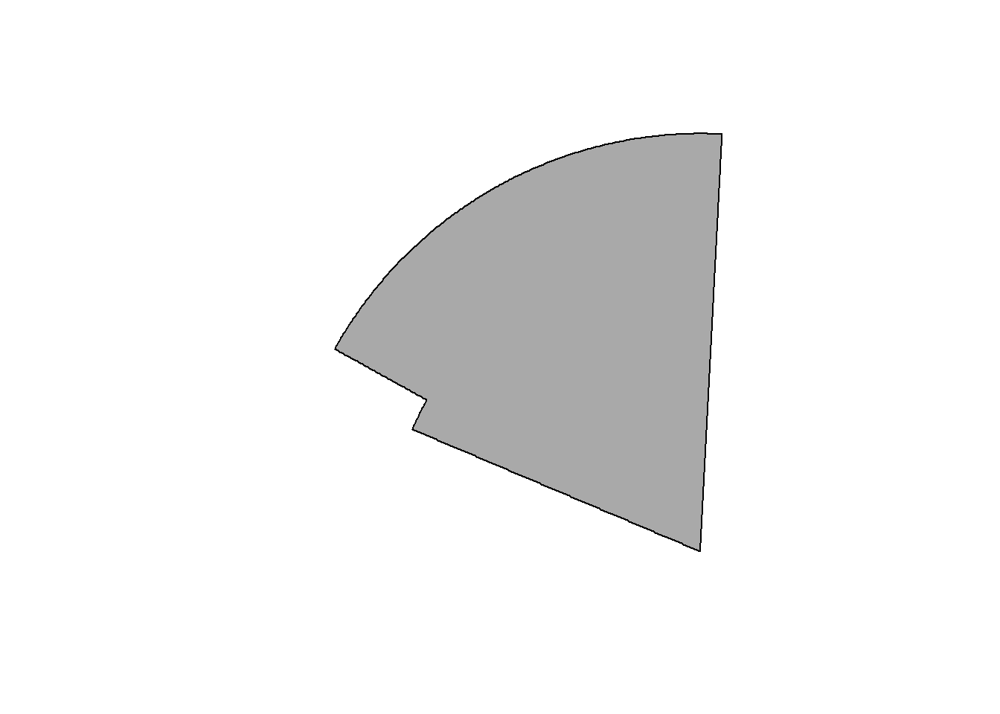

The goal of cconvention is to provide access to the CCAMLR convention in spatial form, from scratch.
Installation
You can install cconvention from github with:
# install.packages("devtools")
devtools::install_github("mdsumner/cconvention")Example
This is a basic example which loads an in-built data set.
library(cconvention)
subarea <- division()
library(sp)
library(rgdal)
p <- spTransform(subarea, "+proj=laea +lon_0=147 +lat_0=-90 +ellps=WGS84 +no_defs")
plot(p, col = "darkgrey")